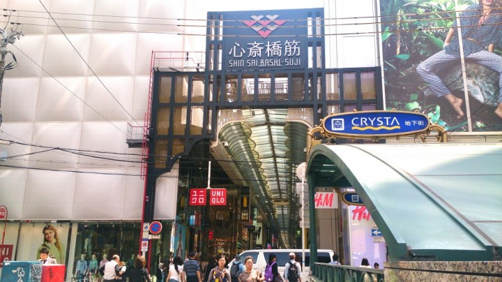
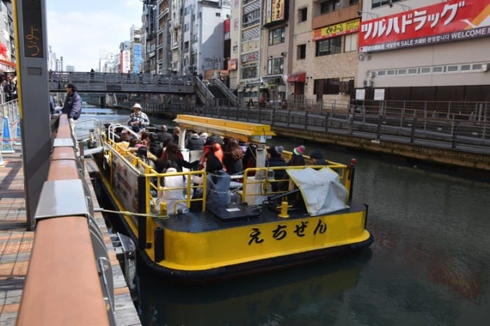
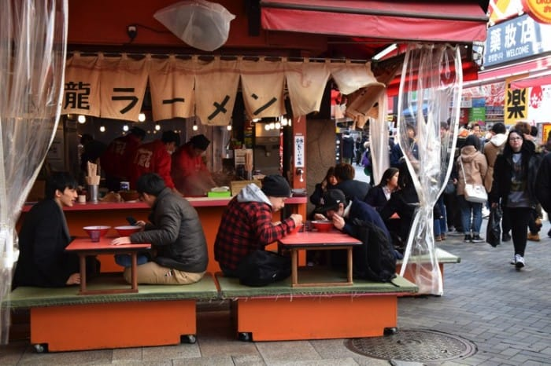
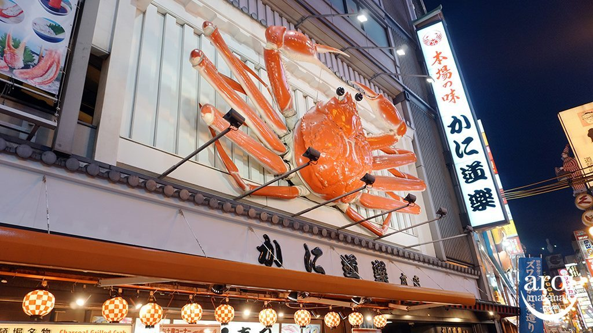

MINAMI
Tourist Spot

Traditional Shopping Street - Hunt for Japan-Made Souvenirs
There are various shotengai (shopping streets) throughout the Minami area, but we’ll introduce two shotengai that are fun to explore.
First is Shinsaibashi Shotengai. Over 180 stores are concentrated here, extending from Dotonbori to Shinsaibashi. Established Osaka department store Daimaru, selling both domestic and international fashion brands, is also on the corner of this shotengai. Many employees here speak English, and there are also English signs and displays, so you can shop with peace of mind.
One more shotengai contains many restaurants unique to Minami. The Sennichimae Doguyasuji shotengai is a three-minute walk from Namba Station (use the Osaka Metro Midosuji or Yotsubashi Line). Here you will find rows of specialty shops with everything you need in for a restaurant, such as knives, pots, and bowls. There are also places where you can create the food samples seen at the entrances of restaurants in Japan. Some shops will even let you make your own samples, making this the perfect place for obtaining memorabilia from your trip.
Cruising on the Dotonbori River
Try the cruise along the Dotonbori River to take in another view of the neighborhood. The cruise also allows visitors to take a break from the crowds. The boarding point is visible from the center of Dotonbori. Tickets cost 900 yen for adults and 400 yen for children. The ride is sure to make your time in Dotonbori all the more special.
Tombori River Cruise Boarding Point: Directly in front of the Dotonbori branch of Don Quijote Official Website: http://www.ipponmatsu.co.jp/cruise/tombori.html (Japanese only)Food

Enjoy Classic Osaka Ramen
Kinryu Ramen, marked by the gigantic dragon on the roof, is a popular spot in Dotonbori. The restaurant is open 24 hours a day and is ideal for late nights. It is known for its simple ramen menu and unlimited toppings to customize your noodles, like kimchi and chives.
Pictured above is part of the dining space. Tatami mats and tables are placed on small stands, on which customers eat ramen while being watched by people passing by. There are also similar mats and low tables located inside. The classic ramen here is made with pork bone broth and is rich in flavor. Each bowl is priced reasonably (from around 600 yen). If you want to truly experience food in Osaka, Kinryu Ramen is the place to visit. We highly recommend trying the ramen at this restaurant.
Kinryu Ramen Dotonbori Branch Address:
Osaka, Osaka, Chuo, Dotonbori 1-7-26
Crab and a Sit-down Meal at a Famous Restaurant
Famous for its moving crab sign, Kani Doraku is also recommended for visitors wanting to enjoy a sit-down meal. This is a higher-end restaurant with a menu that includes fresh crab, hot pot, and even traditional Japanese kaiseki cuisine. The dishes here are high-quality and exquisite. They also serve crabs to go.
Kani Doraku Dotonbori Main Branch Address:
Osaka, Osaka, Chuo, Dotonbori 1-6-18